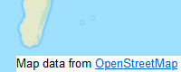

حول هذه الترجمة
في حالة التعارض ما بين هذه الصفحة المترجمة و النص الإنجليزي الأصلي, يجب أن تأخذ الصفحة الإنجليزية الأفضلية
حقوق النشر والترخيص
OpenStreetMap provides open map data for thousands of websites, mobile apps, and hardware devices. OpenStreetMap is built by a community of people like you who contribute and maintain mapping data about roads, trails, cafés, railway stations, and much more, all over the world.
Learn more about OpenStreetMap and get started mapping! You can read more on the OpenStreetMap Blog, and subscribe to weeklyOSM. Find other mappers in your local OSM community. Support the project by joining the OSM Foundation and making a donation.
ترخيص خريطة الشارع المفتوحة
OpenStreetMap is open data, licensed under the Open Data Commons Open Database License (ODbL) by the مؤسسة خريطة الشارع المفتوحة (OSMF). In summary:
You are free to copy, distribute, transmit and adapt our data, as long as you credit OpenStreetMap and its contributors. If you alter or build upon our data, you may distribute the result only under the same license. The full legal code at Open Data Commons explains your rights and responsibilities.
Our documentation is licensed under the Creative Commons Attribution-ShareAlike 2.0 license (CC BY-SA 2.0).
Read more about using our data at the OSMF Licence page.
كيفية النسبة لخريطة الشارع المفتوحة
عندما تستخدم بيانات OpenStreetMap، فأنت مطالب بالقيام بالأمرين التاليين:
- Provide credit to OpenStreetMap by displaying our attribution notice.
- Make clear that the data is available under the Open Database License.
For the attribution notice, we have different requirements on how this should be displayed, depending on how you are using our data. For example, different rules apply on how to show the attribution notice depending on whether you have created a browsable map, a printed map or a static image. More details can be found in the attribution guidelines section of the licensing requirements.
Generally speaking, to make clear that the data is available under the Open Database License, you may link to this copyright page. If you are distributing OSM in data form, please name and link directly to the license(s). In media where links are not possible (e.g. printed works), please include the full URL on the page, e.g. https://www.openstreetmap.org/copyright.
In this example, the credit appears in the corner of the map:

انتهاك حقوق الملكية
يتم تذكير المساهمين OSM لا لإضافة البيانات من أي المصادر المحمية بحقوق الطبع والنشر (مثل خرائط Google أو الخرائط المطبوعة) بدون إذن صريح من أصحاب حقوق النشر.
إذا كنت تعتقد أن المواد المحمية بحقوق الطبع والنشر قد تم بشكل غير لائق المضافة إلى قاعدة بيانات OpenStreetMap أو هذا الموقع ، يرجى الرجوع إلى takedown procedure أو ملف مباشرة على موقعنا on-line filing page.
العلامات التجارية
خريطة الشارع المفتوح، وشعار العدسة المكبرة، وحالة الخريطة علامات تجارية مسجلة لمؤسسة OpenStreetMap. إذا كانت لديك أي أسئلة حول استخدامك لهذه العلامات، يُرجى الاطلاع على رابط سياسة العلامة التجارية Trademark Policy.
خدمات إضافية
Although OpenStreetMap is open data, we cannot provide a free-of-charge map API or map tiles for third-parties. See our API Usage Policy, Tile Usage Policy and Nominatim Usage Policy.
المساهمين
مساهمونا هم آلاف الأفراد، نوفر أيضا بيانات مرخصة بشكلٍ مفتوح من وكالات الخرائط الوطنية وغيرها من المصادر، من بينها:
- أستراليا: Contains data from Stadt Wien (under CC BY), Land Vorarlberg and Land Tirol (under CC BY AT with amendments).
- أستراليا: Incorporates or developed using Administrative Boundaries © جيوسكيب أستراليا licensed by the Commonwealth of Australia under Creative Commons Attribution 4.0 International licence (CC BY 4.0).
- كندا : يحتوي على بيانات من GeoBase & reg ؛، GeoGratis (& copy؛ Department of Natural موارد كندا) ، CanVec (& نسخ ؛ قسم الطبيعية الموارد الكندية) ، و StatCan (قسم الجغرافيا ، إحصائيات كندا).كندا©®
- Czechia: Contains data from the State Administration of Land Surveying and Cadastre licensed under Creative Commons Attribution 4.0 International licence (CC BY 4.0)
- ٪ {finland}: يحتوي على بيانات من المسح الوطني للأراضي لقاعدة البيانات الطبوغرافية لفنلندا ومجموعات البيانات الأخرى ضمن٪ {nlsfi_license_link}.فنلنداترخيص NLSFI
- فرنسا: يحتوي على بيانات مصدرها Direction Générale des Impôts.
- Croatia: Contains data from the State Geodetic Administration of Croatia and National Open Data Portal (public information of Croatia).
- هولندا: Contains © AND data, 2007 (www.and.com)
- نيوزيلندا: Contains data sourced from the خدمة بيانات LINZ and licensed for reuse under CC BY 4.0.
- صربيا: يحتوي على بيانات من الهيئة الجيوديسية الصربية و بوابة البيانات الوطنية المفتوحة (معلومات عامة عن صربيا) ، 2018.
- سلوفينيا: Contains data from the هيئة المساحة ورسم الخرائط and وزارة الزراعة والغابات والأغذية (public information of Slovenia).
- إسبانيا: Contains data sourced from the Spanish National Geographic Institute (IGN) and National Cartographic System (SCNE) licensed for reuse under CC BY 4.0.
- جنوب إفريقيا: يحتوي على بيانات مصدرها المديرية الرئيسية: المعلومات الجغرافية المكانية الوطنية ، حقوق الطبع والنشر محفوظة للولاية.
- المملكة المتحدة: يحتوي على Ordnance بيانات المسح © حقوق النشر محفوظة لشركة Crown وقاعدة البيانات 2010-2023.
لمزيد من التفاصيل حول هذه المصادر ، وغيرها من المصادر التي تم استخدامها للمساعدة في تحسين OpenStreetMap ، يرجى الاطلاع على صفحة المساهمين على OpenStreetMap Wiki.
إدراج البيانات في OpenStreetMap لا يعني أن الأصلي مزود البيانات يؤيد OpenStreetMap ، يوفر أي ضمان ، أو يقبل أي مسؤولية.